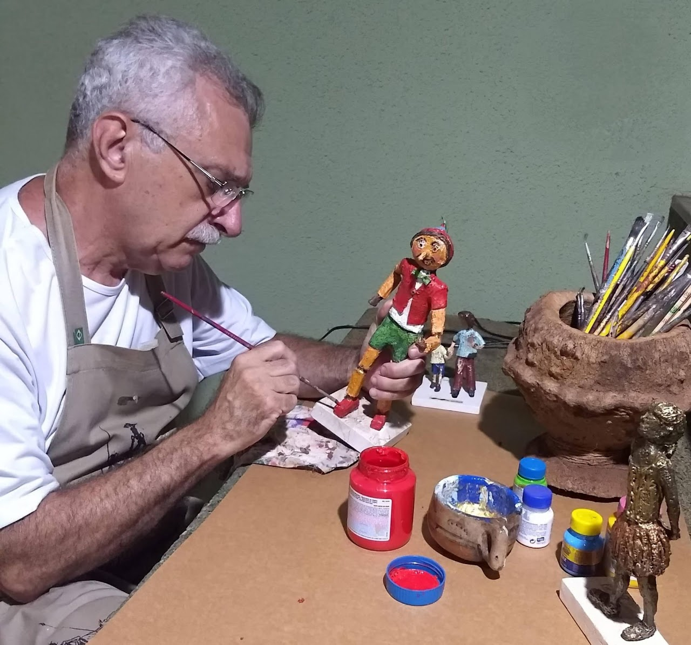

Raízes da Criação
A arte de Elson Sposito está profundamente enraizada em sua herança italiana e nas memórias afetivas. Inspirado pela simplicidade e o valor do reaproveitamento aprendido com seus antepassados, Elson desenvolveu uma técnica autoral de escultura que transforma materiais variados em obras de arte carregadas de emoção.
Desde pedacinhos de arame reutilizado e papelão, até silicone e tintas, cada material ganha uma nova vida em suas mãos. Mais do que a matéria-prima, o elemento principal de sua criação é a emoção. Seus trabalhos transcendem o acadêmico, sendo um emaranhado de histórias familiares, valores recebidos e a nostalgia da infância.
Com milhares de peças produzidas, suas esculturas já foram expostas e premiadas em diversas regiões do Brasil e do mundo, retratando desde bailarinas em poses delicadas e cenas do cotidiano, até personagens emblemáticos da literatura, como Dom Quixote, e figuras do folclore brasileiro.
